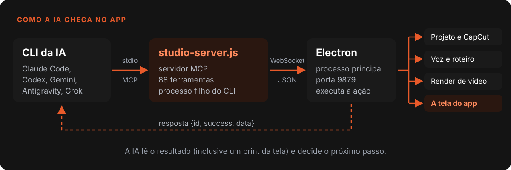
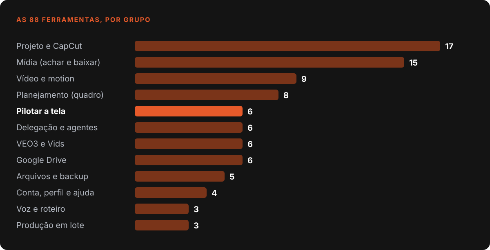
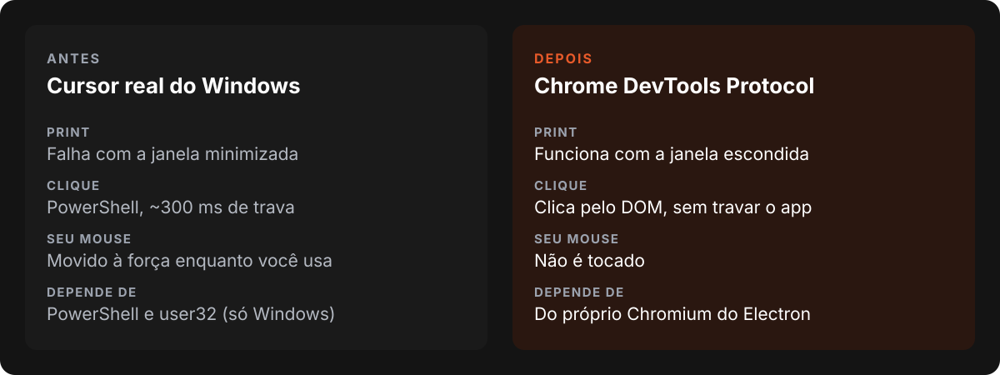
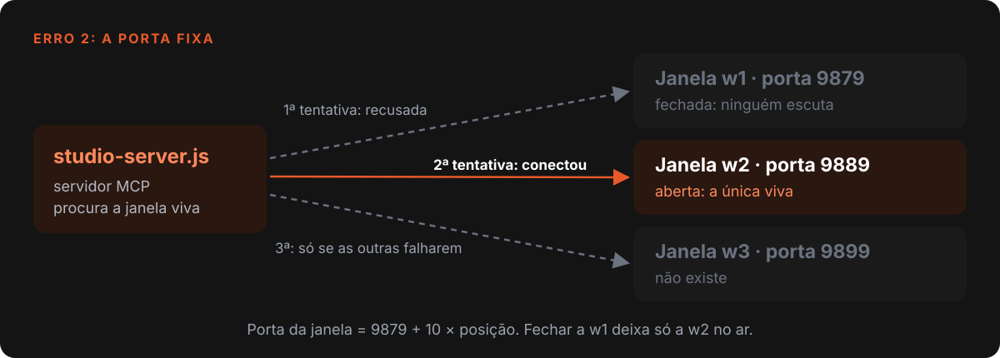
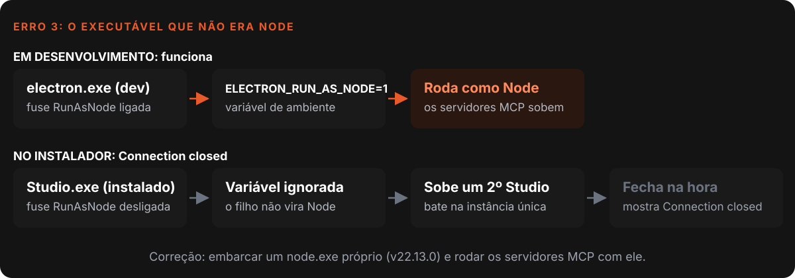
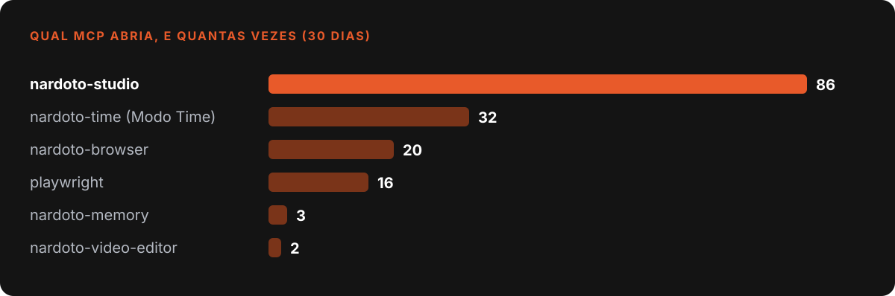

Nardoto
NardotoComo fiz o chat de IA pilotar o próprio app com MCP
O chat do Nardoto Studio cria projeto, narra, busca mídia e clica na tela por 88 ferramentas MCP. A arquitetura e os cinco erros que mais me custaram tempo.

O Nardoto Studio é um editor de vídeo para Windows e Mac. Dentro dele roda um chat em que a pessoa conecta a própria IA (Claude Code, Codex, Gemini, Antigravity ou Grok) e pede o que quer: "cria um projeto", "narra esse roteiro", "acha imagens reais sobre a Torre Eiffel", "monta no CapCut".
Para isso funcionar, a IA não pode só responder texto. Ela precisa operar o aplicativo. Este post conta como fiz essa ponte com o Model Context Protocol (MCP), o padrão aberto que os agentes de IA usam para chamar ferramentas externas 1, e os erros que me custaram mais tempo. Dois deles só apareceram com o app instalado no computador do cliente.
O que o código diz hoje (29/10/2026)
- O servidor MCP do Studio expõe 88 ferramentas, mais 9 do navegador interno e 4 de memória.
- Servidores e bibliotecas do MCP somam cerca de 5.900 linhas, em 60 commits desde fevereiro de 2026.
- Uso real medido em 30 dias: o servidor do Studio foi aberto em 86 sessões de chat; o do navegador, em 20.
A arquitetura em uma frase
A IA conversa com um processo pequeno, e esse processo conversa com o aplicativo por WebSocket.
- O CLI da IA (Claude Code, por exemplo) inicia o
studio-server.jscomo processo filho e fala com ele por entrada e saída padrão, do jeito que o MCP define. - O
studio-server.jsnão sabe fazer nada sozinho. Cada chamada vira uma mensagem{id, action, params}enviada por WebSocket para o processo principal do Electron, na porta 9879. - O processo principal executa a ação de verdade (criar projeto, gerar áudio, clicar na tela) e devolve
{id, success, data}.

A vantagem dessa separação é que o mesmo conjunto de ferramentas serve dois servidores: o local, por stdio, e um servidor HTTP remoto, que usa a mesma fábrica de ferramentas. Quem define o que existe é um arquivo só.
O que as 88 ferramentas fazem
Não comecei com 88. Cada ferramenta nasceu de um pedido real que o chat não conseguia atender.
| Grupo | Exemplos | Para que serve |
|---|---|---|
| Projeto e CapCut | create_project, sync_project, insert_srt, export_to_capcut |
Montar e sincronizar o projeto de vídeo |
| Voz e roteiro | generate_script, tts_generate, check_script_length |
Escrever e narrar com as vozes do app |
| Mídia | search_archives, youtube_moments, download_footage, search_music |
Achar imagem real, trecho de vídeo e trilha |
| Vídeo e motion | remotion_render, video_render, render_motion_pecas |
Renderizar motion graphics e o vídeo final |
| Delegação | delegar, mega_brain |
Uma IA passar tarefa para outra |
| Pilotar a tela | screenshot, mouse_click, type_text, navigate_panel |
Ver e operar a interface como uma pessoa |
| Planejamento | planning_add_card, planning_move_card |
Quadro de tarefas da produção |

O grupo mais curioso é o de pilotar a tela. Com screenshot a IA recebe a imagem da tela e vê o resultado. Com mouse_click e type_text ela age. Isso fecha o ciclo: agir, olhar, conferir.
Erro 1: o print cego e o mouse do usuário
A primeira versão do screenshot usava a captura de tela do próprio Electron. Funcionava, até a janela ficar minimizada: aí vinha o erro "Current display surface not available for capture". A IA ficava cega justamente quando a pessoa estava fazendo outra coisa.
O mouse_click tinha um problema pior. Ele movia o cursor real do Windows por meio do PowerShell. Cada clique travava o processo principal por cerca de 300 milissegundos, brigava com o mouse de quem estava usando o computador e simplesmente não existia no Mac.
A saída foi usar o Chrome DevTools Protocol (CDP) quando a automação está ligada. O CDP tira print mesmo com a janela escondida e clica pelo DOM, sem tocar no mouse físico 2. Hoje uso o CDP para testar funcionalidades no app real e gravar tutoriais.

Uma lição pequena que veio junto: o clique por seletor mira no centro do elemento. Se o seletor pega um contêiner largo, o centro cai em outro painel e o clique erra sem dar erro nenhum.
Erro 2: a janela 2 que ninguém atendia
O Studio abre várias janelas, e cada uma tem as próprias portas: a primeira usa 9879, a segunda 9889, a terceira 9899. O número da janela é reciclado. Se a pessoa fecha a primeira e continua na segunda, fica só a 9889 escutando.
Só que o servidor MCP tinha a porta 9879 fixa no código. Numa noite inteira de trabalho, delegação, quadro de tarefas e navegador interno falharam com "Não conectado ao Nardoto Studio", com o app aberto na frente.

O diagnóstico levou dez segundos depois que eu soube onde olhar: netstat mostrando qual porta estava viva. A correção foi o servidor tentar 9879, depois 9889, depois 9899, e o ideal é o app passar a porta certa da janela pelo ambiente do processo filho.
Erro 3: o executável que não era Node
Esse é o meu favorito, porque o sintoma não aponta para o culpado.
Para não depender de Node instalado no computador do cliente, mudei o lançamento dos servidores MCP: em vez de node, eles passaram a rodar pelo próprio executável do Studio, com a variável ELECTRON_RUN_AS_NODE. Em desenvolvimento, perfeito.
No instalador, os três servidores MCP morriam com "Connection closed". O motivo: o empacotamento grava as fuses do Electron, chaves que ficam dentro do binário, e a RunAsNode estava desligada por segurança 3. Com ela desligada a variável é ignorada. O "processo filho" subia como um segundo Studio, batia na trava de instância única e fechava na hora.

A correção foi embarcar um node.exe próprio no instalador e criar um teste que trava a regressão: "empacotado sem Node nenhum, nunca o executável do Studio". O diagnóstico que decide em um minuto ficou anotado: ler as fuses do executável. Se RunAsNode estiver desligada, aquela variável não existe para ele.
Erro 4: MCP demais trava o computador
Cada sessão de cada IA abria todos os servidores MCP configurados. Com várias abas de chat e vários CLIs, o computador ficava cheio de processos que ninguém estava usando.
A regra nova: só o servidor do Studio abre junto. O resto liga sob demanda. O servidor do Studio tem duas ferramentas, ferramentas_extras e usar_ferramenta_extra, que sobem o servidor extra na hora, e ele desliga sozinho depois de 10 minutos parado.
Um detalhe que só descobri testando: o Claude Code esconde parte das ferramentas atrás de uma busca interna. Um modelo menor, sem achar a ferramenta, foi procurar a resposta na internet. A correção foi colocar o catálogo das ferramentas extras nas instruções do servidor, que o modelo lê sempre.
Antes de decidir, medi. Em 30 dias, o servidor do Studio apareceu em 86 sessões. O de edição de vídeo, em 2. Não fazia sentido os dois abrirem sempre.

Erro 5: a resposta certa da página errada
O servidor do navegador interno tem uma ferramenta que roda JavaScript na página aberta. Ela procurava abas do tipo webview. Só que as abas do navegador tinham migrado para outro componente do Electron, o WebContentsView.
Resultado: o JavaScript rodava em outra página qualquer da janela e respondia com sucesso. Perdi um bom tempo achando que a aba não estava aberta. Desde então, a regra é conferir o endereço da página que a ferramenta devolve antes de confiar no resultado.
O que eu levaria para qualquer projeto com MCP
- Ferramenta nasce de pedido real. As 88 vieram de conversas em que o chat travou, não de uma lista planejada.
- A IA precisa ver o resultado. Um print depois de cada ação vale mais que qualquer "pronto, funcionou".
- Teste no instalador, não só em desenvolvimento. Dois dos cinco erros acima só existiam com o app instalado.
- Meça antes de mudar. O número de sessões por servidor decidiu o que ficava ligado.
- Escreva o diagnóstico. Cada erro virou uma nota com o sintoma, a causa e o comando que confirma em um minuto.
Referências
- Model Context Protocol, documentação oficial
- Chrome DevTools Protocol
- Electron Fuses, documentação oficial
Escrito por Tharcisio Nardoto, engenheiro civil e criador do Nardoto Studio.